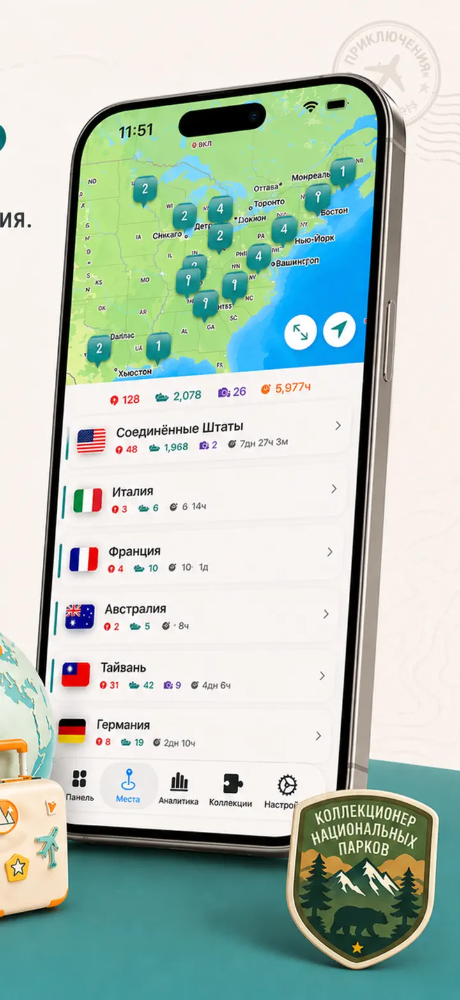
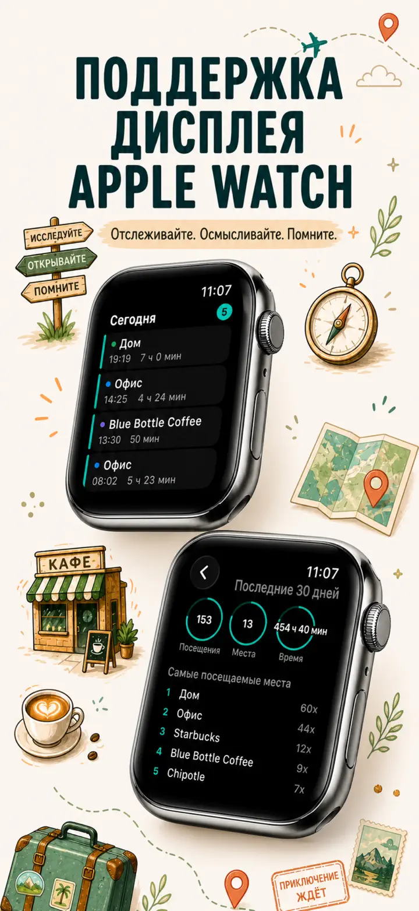
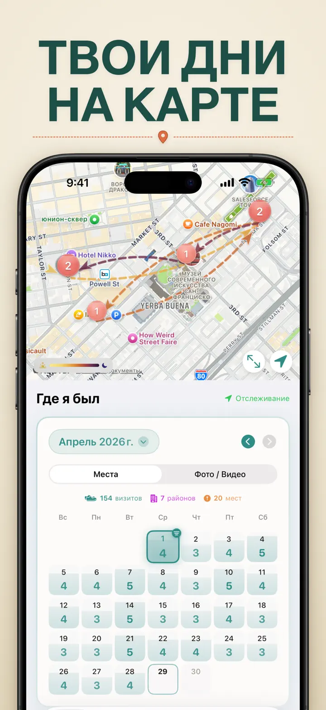
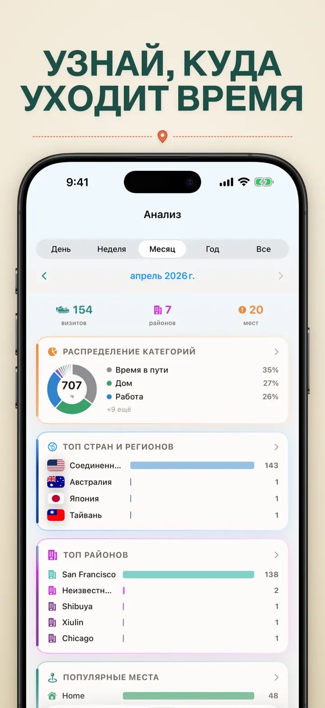
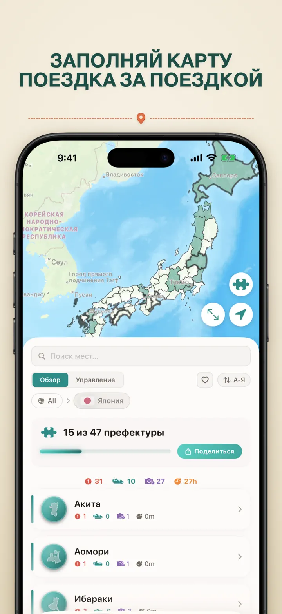
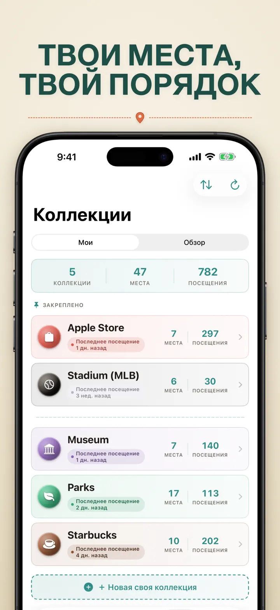
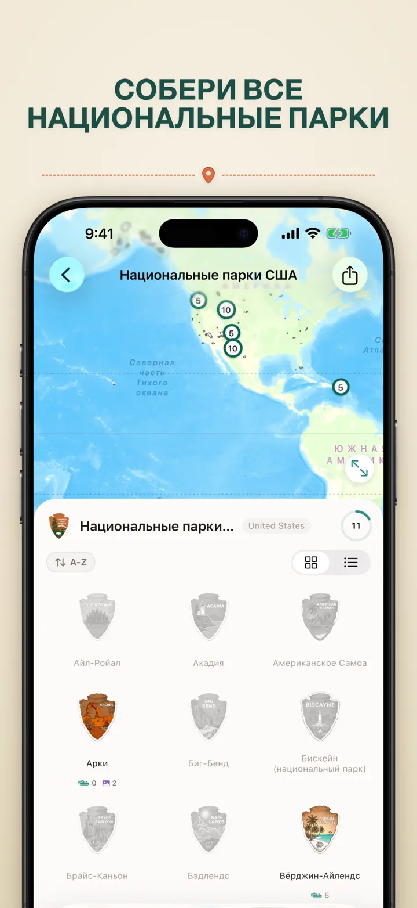
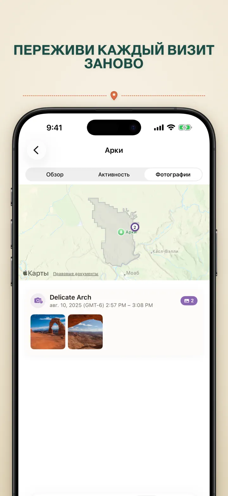

Где я был?
Места, фото и маршруты
Новое: 103 святилища Итиномия Японии, у каждого свой резной значок. Автоматический учёт визитов и приватная хронология — всё на устройстве.
Загрузить из App StoreО приложении
Where was I ? — Ваша личная память о местах
Пытались вспомнить ресторан из прошлого месяца? Или узнать, сколько времени проводите в офисе и дома? Where was I ? автоматически отслеживает посещения и строит хронологию вашей жизни.
АВТОМАТИЧЕСКОЕ ОТСЛЕЖИВАНИЕ
Никаких ручных записей. Приложение незаметно фиксирует прибытие и уход, создавая подробную историю посещений без усилий с вашей стороны.
УДОБНЫЙ КАЛЕНДАРЬ
Просматривайте посещения по дням, неделям и месяцам. Интуитивный календарь показывает число визитов и мест. Нажмите на день, чтобы увидеть, где вы были.
ВИДЖЕТЫ ГЛАВНОГО И ЗАБЛОКИРОВАННОГО ЭКРАНА
Последние визиты — одним взглядом через средний виджет на главном экране. Виджеты заблокированного экрана показывают текущее место, таймер пребывания или число визитов за сегодня — все открываются по касанию.
ОРГАНИЗАЦИЯ ЛОКАЦИЙ
Места автоматически группируются по регионам и городам. Назначайте категории: Дом, Работа, Спортзал, Кафе. Создавайте свои категории с иконками и цветами.
МОЩНАЯ АНАЛИТИКА
Откройте закономерности в своей жизни:
- Распределение времени по категориям
- Самые посещаемые места
- Анализ недельного ритма
- Тренды частоты посещений
- График длительности визитов по местам — за день, неделю, месяц или год
КОЛЛЕКЦИЯ РЕГИОНОВ ПО СТРАНАМ
Превратите путешествия в пазл! Узнайте, сколько регионов вы посетили в каждой стране. Делитесь прогрессом картинкой.
ПРОГРЕСС В НАЦИОНАЛЬНЫХ ПАРКАХ
Откройте дикую природу! Автоматически фиксируйте посещения нацпарков и следите за прогрессом наряду с обычными местами.
100 ЗНАМЕНИТЫХ ЗАМКОВ ЯПОНИИ
Путешествуете по Японии? Новая встроенная коллекция отслеживает посещения 100 знаменитых замков страны. Откройте «Коллекции» → «Обзор» → «Япония».
СВОИ КОЛЛЕКЦИИ
Собирайте что угодно — Apple Stores, музеи, пивоварни. Создайте коллекцию, задайте ключевые слова — и она сама пополняется. Добавляйте места вручную. Счётчик, история и карта.
ИМПОРТ ИСТОРИИ ПЕРЕМЕЩЕНИЙ
Переходите из другого приложения? Перенесите всю свою историю — формат определяется автоматически, большие экспорты обрабатываются, а перед импортом вы увидите предпросмотр:
- Google Timeline (экспорт Google Maps или Google Takeout)
- Arc Timeline (ежемесячные файлы .json, которые вы экспортируете из Arc)
- Moves (резервная копия ProtoGeo / Facebook Moves)
МАССОВОЕ УПРАВЛЕНИЕ
Управляйте всеми локациями в одном месте. Поиск, сортировка, фильтрация. Выбирайте несколько мест для категоризации или удаления. Держите библиотеку в порядке.
ПРИВАТНОСТЬ ПРЕЖДЕ ВСЕГО
Данные о местоположении остаются на устройстве. Без регистрации. Ничего не отправляется на серверы. Ваши перемещения — только ваше дело.
ИДЕАЛЬНО ДЛЯ:
- Учёта рабочих часов и мест
- Запоминания ресторанов и магазинов
- Анализа повседневных маршрутов
- Дневника путешествий и визитов в нацпарки
- Отчётов о расходах и пробеге
ВОЗМОЖНОСТИ:
- Автоматическое определение прибытия и ухода
- Календарь с ежедневной хронологией визитов
- Виджеты главного и заблокированного экрана с переходом в приложение
- Группировка мест по регионам и городам
- Свои категории с иконками и цветами
- Умные подсказки категорий из Apple Maps
- Подробная история визитов с длительностью
- График длительности визитов по местам (день / неделя / месяц / год)
- Панель аналитики с инсайтами
- Поиск и фильтрация локаций
- Коллекция регионов по странам с возможностью поделиться пазл-картинкой
- Отслеживание прогресса в национальных парках
- Встроенная коллекция «100 знаменитых замков Японии»
- Свои коллекции с автоподбором по ключевым словам, ручным редактированием и статистикой
- Массовое управление местами
- Импорт из Google Timeline, Arc Timeline и Moves
- Возможности экспорта
- Без регистрации
- Фокус на приватности
Начните создавать память о местах уже сегодня. Скачайте Where was I ? и никогда не забывайте, где побывали.
Privacy Policy: https://masawata.net/privacy-policy.html Terms Of Service: https://www.apple.com/legal/internet-services/itunes/dev/stdeula/
Снимки экрана








Где я был?
Новое: 103 святилища Итиномия Японии, у каждого свой резной значок. Автоматический учёт визитов и приватная хронология — всё на устройстве.
Загрузить из App Store